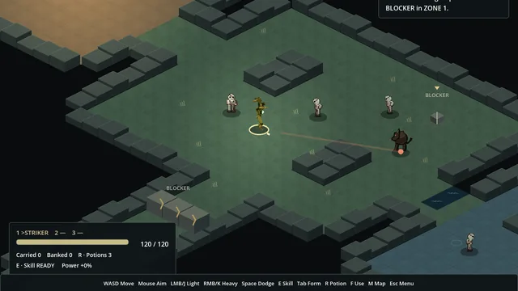

01
Voz por proximidade
Desenvolvimento em C# de comunicação por voz integrada ao jogo.
Blender, Godot e C# em projetos com execução e revisão coordenadas por agentes de IA.
Ver os trabalhos
Lógica de jogo e cenários em Godot, a partir do protótipo em Ruby e Gosu.
Aplicação: game-two, RPG de ação em versão de teste.
Ver as capturasMapa com iluminação e pontos de interação.
Personagem que alterna ataque rápido, defesa e ataque à distância.
Barras de estado e feedback visual.
Reconstrução do protótipo feito em Ruby e Gosu.
Acessórios e cabelo, com atenção à silhueta, à malha e aos materiais.
Seleção de acessórios e cabelo, com validação local em avatar R15.
Ver seleção em PDFBolsa transversal com dois bolsos, fecho metálico e detalhes em azul.
Detalhes do modelo
Cabelo em camadas, com franja assimétrica, mechas largas e pontas definidas.
Detalhes do modelo
Armação angular, lentes escuras e hastes com detalhes metálicos.
Detalhes do modelo
Núcleo grafite cercado por anéis prateados e pequenos satélites azuis.
Detalhes do modelo
Pipeline em Python no Blender que limpa, reduz a malha e separa os modelos em peças para uso em jogos.
Veículos de até 565 mil triângulos reduzidos a no máximo 50 mil, com bake de texturas e exportação em FBX.
Ver as capturasLimpeza, remoção de logotipos e redução para até 50 mil triângulos.
Carroceria, vidros e rodas com pivô, prontos para personalização.
Pinturas, fibra de carbono, rodas e cinco estilos completos.
Setores, casas e pistas gerados por scripts em Luau.
Veículos: modelos do Sketchfab sob CC BY 4.0, de Benit Kibabu, Lexyc16, ItsDiyor, M GARAGE LTD., Jamie Hamel-Smith e Pavlo_Holubov. Modificados: decimados, sem logotipos, separados em peças.
Desenvolvimento em C# de sistemas de comunicação e ferramentas de apoio.
Projeto em desenvolvimento.
Desenvolvimento em C# de comunicação por voz integrada ao jogo.
Inspeção de código e engenharia reversa para compreender e revisar integrações de voz.
Lógica, áudio e comunicação entre o jogo e o sistema de voz.